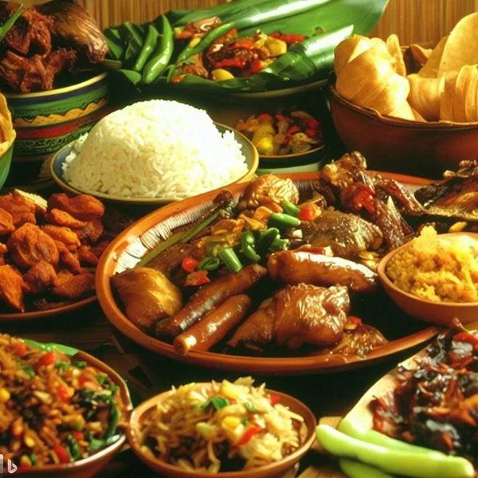

At Kaldero’t Kultura, we believe that every dish tells a story. Our mission is to bring authentic Filipino flavors straight to your kitchen, wherever you are in the world. From timeless classics to modern twists, we celebrate the rich heritage, warmth, and soul of Filipino cooking—making it easy for you to savor homegrown goodness with every bite.